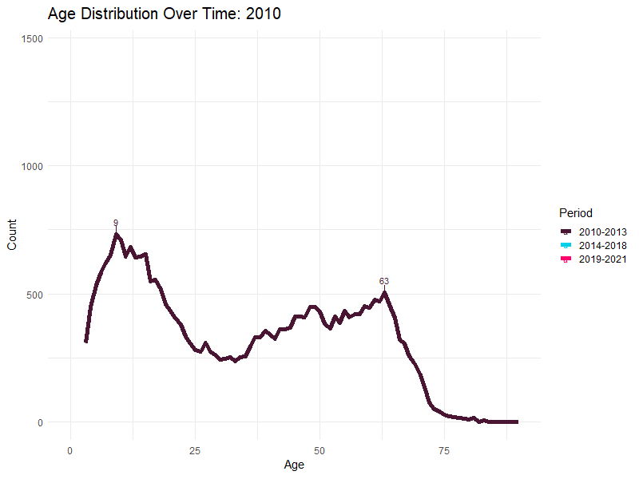
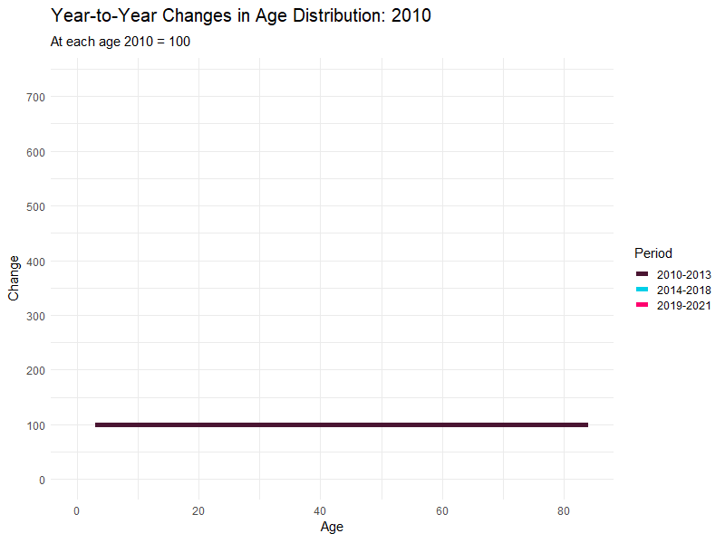
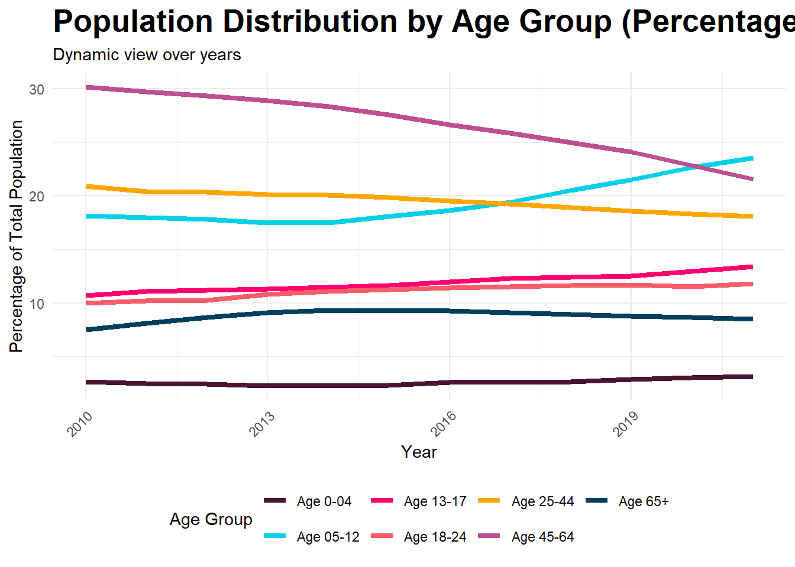

# Prevalence Calculation
calculate_prevalence_ag <- function(data, target_indicator, target_value) {
# Filter the data for the specified indicator
prepared_data <- data %>%
filter(indicator == target_indicator)
# Convert target_value to the appropriate type based on data column type
if (is.numeric(data$value[1])) {
target_value <- as.numeric(target_value)
}
# Calculate prevalence for each population group and age group
prevalence_data <- prepared_data %>%
group_by(Year, pop_group, age_group) %>% # Include age_group in the grouping
summarise(
Total_n = sum(n, na.rm = TRUE),
Count_with_value = sum(n[value == target_value], na.rm = TRUE),
Prevalence = (Count_with_value / Total_n) * 100,
.groups = 'drop'
)
# Calculate prevalence for the total population
total_prevalence <- prepared_data %>%
group_by(Year, age_group) %>%
summarise(
pop_group = "Total Population",
Total_n = sum(n, na.rm = TRUE),
Count_with_value = sum(n[value == target_value], na.rm = TRUE),
Prevalence = (Count_with_value / Total_n) * 100,
.groups = 'drop'
)
# Combine the prevalence data for population groups and total population
prevalence_data <- bind_rows(prevalence_data, total_prevalence)
# Print the prevalence data
print(prevalence_data)
# Plotting the prevalence data with an additional facet for age groups
plot <- ggplot(prevalence_data, aes(x = pop_group, y= Prevalence, fill = as.factor(Year))) +
geom_bar(stat = "identity", position = position_dodge(0.9), width = 0.8) +
labs(title = paste("Prevalence of", target_indicator, "by Population Group, Age Group, and Year (value =", target_value, ")"),
x = "Population Group",
y = "Prevalence (%)",
fill = "Year") +
facet_wrap(~age_group, scales = "free_x") + # Facet by age group
theme_minimal() +
theme(axis.text.x = element_text(angle = 45, hjust = 1)) +
scale_fill_brewer(palette = "Set1")
return(list(Prevalence_Data = prevalence_data, Plot = plot))
}Interim Report: Demographic Snapshot Update of DSS
Index
- Phase 1 – Descriptive Statistics
- Phase 2 – System Dynamics
- Phase 3 – Markov Chain Modelling
- Appendices
IDI Disclaimer
These results are not official statistics. They have been created for research purposes from the Integrated Data Infrastructure (IDI) and Longitudinal Business Database (LBD) which are carefully managed by Stats NZ. For more information about the IDI, please visit Stats NZ.
Access to the data used in this study was provided by Stats NZ under conditions designed to give effect to the security and confidentiality provisions of the Data and Statistics Act 2022. The results presented in this study are the work of the author, not Stats NZ or individual data suppliers.
The results are based in part on tax data supplied by Inland Revenue to Stats NZ under the Tax Administration Act 1994 for statistical purposes. Any discussion of data limitations or weaknesses is in the context of using the IDI for statistical purposes and is not related to the data’s ability to support Inland Revenue’s core operational requirements.
Phase 1 – Descriptive Statistics
Demographic Data Update
- Data preparation
- Analysing the codes shared by SWA
- Running updated descriptive statistics
- Rolling forward population to the latest available year
- Updating all variables and data assembly to the latest available year
- Documenting the steps to roll forward the analysis and automate doing so
- Creating and validating results
Changes in Population Age Distribution
Bimodal distribution with two peaks around the ages 9-13 and 57-63. The first peak shows growth from 2014, which speeds up after 2019. During the 2010-2021 period, the count of population in their early teens (9-13) increases from 3414 to 6633, i.e., by 94.29%. However, the age group displaying the highest growth rate over the period are those aged 70 and over.
 
Warning: Removed 276 rows containing missing values or values outside the scale range
(`geom_line()`).
Warning: Removed 84 rows containing missing values or values outside the scale range
(`geom_point()`).
Warning: Removed 84 rows containing missing values or values outside the scale range
(`geom_point()`).
Notes:
Young Age Groups (Age 8-13)
The first peak typically seen in the younger age groups (ages 3 to 13) has shown a pronounced and rapid growth over the years, notably increasing its count dramatically. For instance, the population at age 9 in 2010 was 732, which surged to 1323 by 2021. This rapid increase suggests a growing prevalence or diagnosis of disabilities in younger children, potentially due to better healthcare screening, more widely available diagnostic services, or an actual increase in cases.
Older Age Groups (Age 57-63)
The second peak traditionally seen in mid-life (ages 57 to 63) indicates a slower change over time compared to the younger group. The count at age 57 was 471 in 2012 and slightly increased to 543 by 2020. This relatively stable but slightly increasing trend could relate to new disabilities acquired in adulthood due to aging, lifestyle diseases, accidents, or other health issues that emerge later in life.
Additional Information
Analysis of the Bimodal Distribution
Younger Age Group Dynamics: The first peak typically seen in the younger age groups (ages 3 to 13) has shown a pronounced and rapid growth over the years, notably increasing its count dramatically. For instance, the population at age 9 in 2010 was 732, which surged to 1323 by 2021. This rapid increase suggests a growing prevalence or diagnosis of disabilities in younger children, potentially due to better healthcare screening, more widely available diagnostic services, or an actual increase in cases.
Transition Challenges: A dip in population counts is typically observed around ages 14 to 16, where there appears to be a decrease before the counts begin to increase again in mid-life. This pattern could be indicative of several factors, including transitions from child to adult disability support services, changes in eligibility criteria, or even mortality rates that might be higher in this group due to severe disabilities. Investigating the reasons behind this dip is crucial as it may reveal gaps in services or support during critical life transitions. Understanding when and why disabled youth drop off from DSS can help in addressing potential shortfalls in the continuity of care and support systems.
Mid-life Age Group Dynamics: The second peak, traditionally seen in mid-life (ages 57 to 63), indicates a slower change over time compared to the younger group. The count at age 57 was 471 in 2012 and slightly increased to 543 by 2020. This relatively stable but slightly increasing trend could relate to new disabilities acquired in adulthood due to aging, lifestyle diseases, accidents, or other health issues that emerge later in life.
65+ Population Dynamics: Despite the apparent client count peak around the age of 9-13 rapidly growing over the period in focus, the group experiencing the largest percentage increase are the oldest group. The growth in the eldest population suggests an urgent need for expanding and adapting services that cater to aging individuals with disabilities. This includes long-term care options, age-appropriate medical interventions, and social support systems that can manage the complexities of aging with a disability.
Population and Variables
Population Groups
The SWA codes have the following population groups for which insights have been obtained:
DSS in Given Year: Individuals who received Disability Support Services (DSS) within the given year of the study. This group represents current users of services tailored for those with disabilities.
DSS in Past: Individuals who have previously received Disability Support Services but did not receive them in the given year of the study. This group helps to track changes in service usage over time.
DSS Subgroup - Early Investment and Intervention: This subgroup includes individuals receiving early investment services and interventions, focusing on early developmental support for younger individuals or those newly diagnosed.
DSS Subgroup - Facility-based Supports: Individuals who receive support services that are facility-based. These are typically more intensive supports provided in specialized settings.
DSS Subgroup - Flexible Funding and Supports: This subgroup includes individuals who receive flexible funding or supports, allowing for personalized accommodations to better meet their unique needs.
DSS Subgroup - Home and Community Supports: Individuals who receive supports and services in their homes or community settings, promoting independence and integration into the community.
Non-DSS Disabled: This group includes individuals who are disabled but do not receive Disability Support Services. The calculation of this group involves identifying individuals with disabilities through various health and welfare databases but who are not registered as users of DSS. This group is critical for understanding the broader scope of disabilities within the population and assessing unmet needs.
Rest of Population: This group includes all other individuals in the population who do not fall into the above categories, serving as a control or comparison group for broader population studies.
Variables
The dataset contains a broad range of variables that are categorized across several domains reflecting different aspects of socio-economic, demographic, health, justice, and housing conditions, among others.
The dataset contains a broad range of variables that are categorised across several domains reflecting different aspects of socio-economic, demographic, health, justice, and housing conditions among others.
Demographics: Variables like Region, TA, Urban/Rural classification, Male, Ethnicity (various categories). These variables provide basic demographic information about individuals.
Need: This includes health and disability-related indicators such as Autism Spectrum Disorder, ADHD, Cerebral Palsy, Major Depressive Disorder, Schizophrenia, and conditions like Wheelchair dependence or Incontinence. It also includes ACC-related claims.
Socio-economic background: Variables like Deprivation Index, Highest qualification, Total income, and Income bands, reflecting the socio-economic status of individuals.
Parent SES (Socio-Economic Status): Specific to the socio-economic conditions of parents, including their highest qualifications, income bands, main benefits, and wages/salary.
Housing: Housing conditions such as In public housing, On social housing waitlist, living arrangements like Living with parents or grandparents, and Accommodation supplements.
Oranga Tamariki: Variables related to child welfare and legal status, including whether a person or their child has had a care placement, is subject to a ROC (Report of Concern), or is under investigation.
Justice: Involves indicators related to criminal offences, such as being a Victim or Offender of any/violent offences, and records of serving community or custodial sentences.
Health: Broader health service engagement indicators like PHO enrolment, Disability Allowance, Child Disability Allowance, Job Seeker benefits for health/disability reasons, and support payments like the Supported Living Payment.
For detailed information, refer to the appendices where the variables and their descriptions are listed, and where differences between 2018 and 2021 variables are highlighted.
Phase 2: System Dynamics
Core Concepts - Stocks and Flows
- Stocks: Represent the elements within a system that accumulate or deplete over time, reflecting the state of the system.
- Flows: The rates at which stocks increase or decrease, essentially defining how stocks change over time.
Placeholder for diagram of stocks and flows
Notes:
System dynamics is a powerful modeling methodology developed by Jay Forrester at MIT, designed to handle the complexities of interconnected systems across various disciplines. This approach combines insights from both social and physical systems to provide a structured way of understanding and predicting dynamics within any system.
Defining Stocks and Flows
Stocks
- Current DSS Clients per Age Group: The number of individuals in each age group receiving DSS at any given time.
Flows
- Inflows:
- New Entrants: Individuals newly registered for DSS.
- Returners: Individuals who previously left but have re-entered DSS.
- Aging In: Individuals transitioning from the previous age group into the current one.
- Outflows:
- Leavers: Individuals who exit DSS for any reason, including being deceased.
- Aging Out: Individuals transitioning from the current age group to the next one.
Placeholder for detailed flow chart
Phase 3 – Markov Chain Modelling
Markov Chain Modelling of Transition Probabilities
Purpose:
- Defining states and probabilities
- Model initialization and simulation
Placeholder for Markov Chain model diagram
Notes:
Markov Chain Modelling involves the use of state-based models where the next state depends only on the current state and not on the sequence of events that preceded it. This characteristic makes it incredibly useful for modeling a variety of real-world processes that conform to these conditions.
Most Common Transitions from DSS at Age 18-24
Placeholder for table/chart of transitions
Notes:
The table is from the preliminary analysis of transition rates. It illustrates the transitions between various mutually exclusive states for individuals from the DSS system within the age group 18-24 over the decade from 2011 to 2020. This data helps identify the most common pathways taken by young adults receiving Disability Support Services and can highlight areas where intervention and support might be adjusted to better serve this population.
THANK YOU
Marianna Pekar
021-131-9793
Marianna.Pekar@gmail.com
References
References will appear here!
Appendices
Appendix A: Data Dictionary
| indicator_category | indicator | Description | Timing | Source |
|---|---|---|---|---|
| Population | Pop_group | Which of the eight groups in the population we are looking at. The “DSS subset” groups are not mutually exclusive (people can receive multiple services), whereas the other population groups are mutually exclusive. | NA | Various |
| Population | Age_group | Groupings based on people’s age | As of 2018 Census | personal_detail |
| Demographics | Ethnicity - Asian | Person’s reported ethnicity | Time invariant | personal_detail |
| Demographics | Ethnicity - European | Person’s reported ethnicity | Time invariant | personal_detail |
| Demographics | Ethnicity - Maori | Person’s reported ethnicity | Time invariant | personal_detail |
| Demographics | Ethnicity - MELAA | Person’s reported ethnicity | Time invariant | personal_detail |
| Demographics | Ethnicity - Other | Person’s reported ethnicity | Time invariant | personal_detail |
| Demographics | Ethnicity - Pacific | Person’s reported ethnicity | Time invariant | personal_detail |
| Demographics | Has a dependent child | Person has a child aged <18 | As of 2018 Census | personal_detail |
| Demographics | Has ever had a child | Person is the birth parent of any other person | Ever up to the reference date (2018 Census or 31st Mar 2021) | personal_detail |
| Demographics | Male | Person’s reported gender is male | Time invariant | personal_detail |
| Demographics | Regional Council | Regional Council corresponding to person’s address | As of reference date | address_notification |
| Demographics | Urban/rural | Urban/rural category of person’s address | As of reference date | address_notification |
| Health | Alternative Education (ever) | Whether the person has ever received Alternative Education | Ever, up to reference date | moe_clean.student_intervention |
| Health | Attendance Service (ever) | Whether the person has ever received Attendance Service | Ever, up to reference date | moe_clean.student_intervention |
| Health | Child Disability Allowance | Whether the person has received the CDA | 12 months before reference date | msd |
| Health | Disability Allowance | Whether the person has received the DA | 12 months before reference date | msd |
| Health | Job Seeker benefit for Health/Disability | Whether the person has received Job Seeker benefit for health or disability | 12 months before reference date | msd |
| Health | Ongoing Resourcing Scheme (ever) | Whether the person has ever received ORS | Ever, up to reference date | moe_clean.student_intervention |
| Health | Parent receives CDA | Whether either birth parent has received the CDA | 12 months before reference date | msd |
| Health | Parent receives Disability Allowance | Whether either birth parent has received the DA | 12 months before reference date | msd |
| Health | Parent receives JS Health/Disability | Whether either birth parent has received Job Seeker benefit for health or disability | 12 months before reference date | msd |
| Health | Parent receives Special DA | Whether either birth parent has received Special Disability Allowance | 12 months before reference date | msd |
| Health | Parent receives Supported Living Payment | Whether either birth parent has received SLP | 12 months before reference date | msd |
| Health | PHO enrolment in 2018 | Whether the person is enrolled in a Primary Healthcare Organisation | As of reference date | moh.pho |
| Health | School High Health Needs Fund (ever) | Whether the person has ever received SHHNF (at school) | Ever, up to reference date | moe_clean.student_intervention |
| Health | Special Disability Allowance | Whether the person has received the SDA | 12 months before reference date | msd |
| Health | Special school (ever) | Whether the person has ever enrolled in a special school | Ever, up to reference date | moe_clean.student_enrol |
| Health | Supported Living Payment | Whether the person has received SLP | 12 months before reference date | msd |
| Housing | Accomodation supplement | Whether the person has receive Accomodation Supplement | As of reference date | msd |
| Housing | Address type | The house type of the person’s address | As of reference date | address_notification |
| Housing | In public housing | Whether the person is in public housing | As of reference date | hnz |
| Housing | Live with grandparent | Whether the person lives with a grandparent | As of reference date | census |
| Housing | Live with parent | Whether the person lives with a parent | As of reference date | census |
| Housing | On social housing waitlist | Whether the person is on the social housing waitlist | As of reference date | hnz |
| Housing | Parent accomodation supplement | Whether either birth parent has received Accomodation Supplement | 12 months before 2018 Census | msd |
| Justice | Offender - any offence | Whether the person has been proceeded against by Police | Ever, up to reference date | pol |
| Justice | Offender - violent offence | Whether the person has been proceeded against by Police for a violent offence | Ever, up to reference date | pol |
| Justice | Served community sentence ever | Whether the person has ever served a community sentence | Ever, up to reference date | cor |
| Justice | Served community sentence in 2018 | Whether the person is serving a community sentence in 2018 | In 2018 | cor |
| Justice | Served custodial sentence ever | Whether the person has ever served a custodial sentence | Ever, up to reference date | cor |
| Justice | Served custodial sentence in 2018 | Whether the person is serving a custodial sentence in 2018 | In 2018 | cor |
| Justice | Victim - any offence | Whether the person has been a recorded victim of an offence | Ever, up to reference date | pol |
| Justice | Victim - violent offence | Whether the person has been a recorded victim of a violent offence | Ever, up to reference date | pol |
| Need | ACC - Case management | Person has an active spell of case management that includes the 2018 Census date | As of reference date | acc |
| Need | ACC - Sensitive claim | Person has a spell of case management or WC AND have an injury arising from an ACC sensitive claim, often a result of sexual assault, abuse or neglect | As of reference date | acc |
| Need | ACC - Serious injury | Person has a spell of case management or WC AND have a serious injury (ACC defined), eg Traumatic Brain Injury, Parapaleigia, Quadrapaligia | As of reference date | acc |
| Need | ACC - Workers Compensation | Person has an active spell of receiving worker’s compensation which includes the 2018 Census date | As of reference date | acc |
| Need | ADHD | Whether the person has evidence of this condition | Ever, up to reference date | Various: moh, acc, msd |
| Need | Amputation of hand/arm | Whether the person has evidence of this condition | Ever, up to reference date | Various: moh, acc, msd |
| Need | Ataxia | Whether the person has evidence of this condition | Ever, up to reference date | Various: moh, acc, msd |
| Need | Autism Spectrum Disorder | Whether the person has evidence of this condition | Ever, up to reference date | Various: moh, acc, msd |
| Need | Bipolar | Whether the person has evidence of this condition | Ever, up to reference date | Various: moh, acc, msd |
| Need | Blind or nearly blind | Whether the person has evidence of this condition | Ever, up to reference date | Various: moh, acc, msd |
| Need | Cerebral Palsy | Whether the person has evidence of this condition | Ever, up to reference date | Various: moh, acc, msd |
| Need | Deaf or nearly deaf | Whether the person has evidence of this condition | Ever, up to reference date | Various: moh, acc, msd |
| Need | Developmental Delay | Whether the person has evidence of this condition | Ever, up to reference date | Various: moh, acc, msd |
| Need | Down Syndrome | Whether the person has evidence of this condition | Ever, up to reference date | Various: moh, acc, msd |
| Need | Foetal Alcohol Spectrum Disorder | Whether the person has evidence of this condition | Ever, up to reference date | Various: moh, acc, msd |
| Need | Fragile X | Whether the person has evidence of this condition | Ever, up to reference date | Various: moh, acc, msd |
| Need | Generalised Anxiety Disorder | Whether the person has evidence of this condition | Ever, up to reference date | Various: moh, acc, msd |
| Need | Huntingtons | Whether the person has evidence of this condition | Ever, up to reference date | Various: moh, acc, msd |
| Need | Incontinence (faecal/urinary) | Whether the person has evidence of this condition | Ever, up to reference date | Various: moh, acc, msd |
| Need | Intellectual Disability | Whether the person has evidence of this condition | Ever, up to reference date | Various: moh, acc, msd |
| Need | Klinefelters Syndrome | Whether the person has evidence of this condition | Ever, up to reference date | Various: moh, acc, msd |
| Need | Major Depressive Disorder | Whether the person has evidence of this condition | Ever, up to reference date | Various: moh, acc, msd |
| Need | Motor Neuron Disease | Whether the person has evidence of this condition | Ever, up to reference date | Various: moh, acc, msd |
| Need | Multiple Sclerosis | Whether the person has evidence of this condition | Ever, up to reference date | Various: moh, acc, msd |
| Need | Muscular Dystrophy | Whether the person has evidence of this condition | Ever, up to reference date | Various: moh, acc, msd |
| Need | Osteoarthritis | Whether the person has evidence of this condition | Ever, up to reference date | Various: moh, acc, msd |
| Need | Polio | Whether the person has evidence of this condition | Ever, up to reference date | Various: moh, acc, msd |
| Need | Schizophrenia | Whether the person has evidence of this condition | Ever, up to reference date | Various: moh, acc, msd |
| Need | Spina Bifida | Whether the person has evidence of this condition | Ever, up to reference date | Various: moh, acc, msd |
| Need | Stroke | Whether the person has evidence of this condition. | Separated in to time-limited groups: 1: <3 months before reference date; 2: 3-12 months before reference date; 3: 12+ months before reference date | Various: moh, acc, msd |
| Need | WGSS - Communication | Response to WGSS question in 2018 Census (5=missing/no response) | As of reference date | census |
| Need | WGSS - Hearing | Response to WGSS question in 2018 Census (5=missing/no response) | As of reference date | census |
| Need | WGSS - Remembering | Response to WGSS question in 2018 Census (5=missing/no response) | As of reference date | census |
| Need | WGSS - Seeing | Response to WGSS question in 2018 Census (5=missing/no response) | As of reference date | census |
| Need | WGSS - Walking | Response to WGSS question in 2018 Census (5=missing/no response) | As of reference date | census |
| Need | WGSS - Washing | Response to WGSS question in 2018 Census (5=missing/no response) | As of reference date | census |
| Need | Wheelchair dependence | Whether the person has evidence of this condition. | Ever, up to reference date | Various: moh, acc, msd |
| Oranga Tamariki | Person has any drivers licence | Person has a current driver’s licence (of any type) | As of reference date | nzta |
| Oranga Tamariki | Person has full drivers licence | Person has a current full driver’s licence | As of reference date | nzta |
| Oranga Tamariki | Person has had care placement | Person has been placed in care | Ever, up to reference date | ot |
| Oranga Tamariki | Person is subject of a ROC | Person is the subject of a report of concern to Oranga Tamariki | Ever, up to reference date | ot |
| Oranga Tamariki | Person is subject of investigation | Person is the subject of an Oranga Tamariki investigation | Ever, up to reference date | ot |
| Oranga Tamariki | Persons child has had care placement | Person’s child has been placed in care (NULL for people without children) | Ever, up to reference date | ot |
| Oranga Tamariki | Persons child is subject of a ROC | Person’s child has been the subject of a report of concern to Oranga Tamariki (NULL for people without children) | Ever, up to reference date | ot |
| Oranga Tamariki | Persons child is subject of investigation | Person’s child the subject of an Oranga Tamariki investigation (NULL for people without children) | Ever, up to reference date | ot |
| Oranga Tamariki | Persons parent has any drivers licence | Person’s child has a current driver’s licence (of any type) | As of reference date | nzta |
| Oranga Tamariki | Persons parent has full drivers licence | Person’s child has a current full driver’s licence | As of reference date | nzta |
| Parent SES | Parent 1 highest qual (NQF) | The highest qualification of parent 1 (generally the person’s mother) | As of reference date | Various: moe, census, msd |
| Parent SES | Parent 1 income bands | The income of parent 1 | At reference date | apc, census |
| Parent SES | Parent 1 main benefit | Whether parent 1 is receiving a main benefit | As of reference date | msd |
| Parent SES | Parent 1 total income | The total income of parent 1 (to derive mean income) | At reference date | apc, census |
| Parent SES | Parent 1 wages/salary | Whether parent 1 received income from wages or salary | At reference date | apc, census |
| Parent SES | Parent 2 highest qual (NQF) | The highest qualification of parent 2 (generally the person’s father) | As of reference date | Various: moe, census, msd |
| Parent SES | Parent 2 income bands | The income of parent 2 | At reference date | apc, census |
| Parent SES | Parent 2 main benefit | Whether parent 2 is receiving a main benefit | As of reference date | msd |
| Parent SES | Parent 2 total income | The total income of parent 2 (to derive mean income) | At reference date | apc, census |
| Parent SES | Parent 2 wages/salary | Whether parent 2 received income from wages or salary | At reference date | apc, census |
| Socio-economic background | Highest qualification (NQF) | The highest qualification of the person | As of reference date | Various: moe, census, msd |
| Socio-economic background | Income bands | The income of the person | At reference date | apc, census |
| Socio-economic background | NZDep | The NZ Deprivation Index of the person’s address | As of reference date | address_notification |
| Socio-economic background | Receipt of wages/salary | Whether the person received income from wages or salary | At reference date | apc, census |
| Socio-economic background | Receiving main benefit | Whether the person is receiving a main benefit | As of reference date | msd |
| Socio-economic background | Total income | The total income of parent 1 (to derive mean income) | At reference date | apc, census |
Appendix B: Differences in Variables between 2018 and 2021
| indicator_category | indicator |
|---|---|
| Demographics | Has a dependent child |
| Demographics | Has ever had a child |
| Health | Parent receives JS Health/Disability |
| Health | Parent receives Special DA |
| Health | Parent receives Supported Living Payment |
| Health | Special Disability Allowance |
| Housing | Address type |
| Justice | Served community sentence in 2018 |
| Justice | Served custodial sentence in 2018 |
| Need | Foetal Alcohol Spectrum Disorder |
| Need | Wheelchair dependence |
| Oranga Tamariki | Persons child has had care placement |
| Oranga Tamariki | Persons child is subject of a ROC |
| Oranga Tamariki | Persons child is subject of investigation |
| indicator_category | indicator |
|---|---|
| Demographics | Territorial Authority |
| Health | Parent receives Supported Living Payment or Job Seeker - Disability |
Appendix C: Datasets for Download
Explanation
- Preview Data: The first 10 rows of each dataset are displayed.
- Download Links: The
[Download SWA Dataset (merged_data)](merged_data.csv)and[Download DSS Population Data (data)](data.csv)provide links to download the full datasets.
SWA Dataset (Merged Data: 2018 and 2021)
| row | pop_group | age_group | indicator_category | indicator | value | n | sum | Year | row_index |
|---|---|---|---|---|---|---|---|---|---|
| 1 | DSS in Given Year | 03-18 | Demographics | Regional Council | 6 | 495 | NULL | 2021 | NA |
| 2 | DSS in Given Year | 03-18 | Demographics | Regional Council | 9 | 1701 | NULL | 2021 | NA |
| 3 | DSS in Given Year | 03-18 | Demographics | Regional Council | 12 | 138 | NULL | 2021 | NA |
| 4 | DSS in Given Year | 19-44 | Demographics | Regional Council | 2 | 3555 | NULL | 2021 | NA |
| 5 | DSS in Given Year | 19-44 | Demographics | Regional Council | 5 | 96 | NULL | 2021 | NA |
| 6 | DSS in Given Year | 19-44 | Demographics | Regional Council | 8 | 732 | NULL | 2021 | NA |
| 7 | DSS in Given Year | 45-64 | Demographics | Regional Council | 15 | 258 | NULL | 2021 | NA |
| 8 | DSS in Given Year | 45-64 | Demographics | Regional Council | 18 | 105 | NULL | 2021 | NA |
| 9 | DSS in Given Year | 65+ | Demographics | Regional Council | 2 | 753 | NULL | 2021 | NA |
| 10 | DSS in Given Year | 65+ | Demographics | Regional Council | 5 | 33 | NULL | 2021 | NA |
DSS Population Numbers by Ages and Age Groupings
| age | 2021 | 2020 | 2019 | 2018 | 2017 | 2016 | 2015 | 2014 | 2013 | 2012 | 2011 | 2010 | age_group |
|---|---|---|---|---|---|---|---|---|---|---|---|---|---|
| 3 | 522 | 462 | 384 | 351 | 315 | 348 | 309 | 255 | 267 | 285 | 312 | 309 | Age 0-04 |
| 4 | 810 | 738 | 687 | 582 | 540 | 483 | 405 | 420 | 399 | 417 | 420 | 447 | Age 0-04 |
| 5 | 1026 | 948 | 831 | 744 | 648 | 564 | 582 | 516 | 507 | 498 | 537 | 534 | Age 05-12 |
| 6 | 1134 | 1026 | 921 | 801 | 690 | 714 | 627 | 597 | 576 | 564 | 606 | 582 | Age 05-12 |
| 7 | 1203 | 1089 | 960 | 843 | 834 | 747 | 687 | 624 | 600 | 600 | 639 | 621 | Age 05-12 |
| 8 | 1287 | 1125 | 993 | 999 | 858 | 780 | 705 | 648 | 636 | 654 | 663 | 651 | Age 05-12 |
| 9 | 1323 | 1167 | 1122 | 969 | 891 | 786 | 717 | 687 | 684 | 678 | 678 | 732 | Age 05-12 |
| 10 | 1344 | 1266 | 1062 | 993 | 873 | 789 | 750 | 711 | 702 | 675 | 753 | 711 | Age 05-12 |
| 11 | 1404 | 1182 | 1080 | 945 | 855 | 795 | 783 | 750 | 681 | 732 | 741 | 645 | Age 05-12 |
| 12 | 1284 | 1173 | 1023 | 933 | 867 | 843 | 783 | 708 | 747 | 741 | 663 | 684 | Age 05-12 |